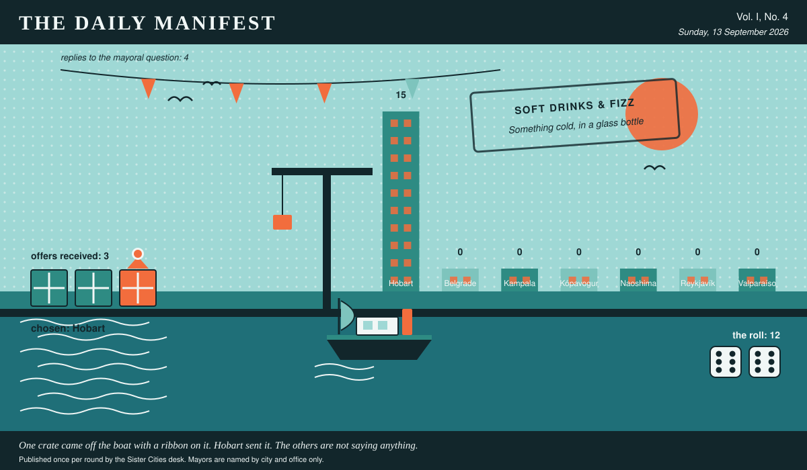

The Daily Manifest
All the news that fits in the hold.
Vol. I, No. 4 · Sunday, 13 September 2026 · Price: free to city halls, exorbitant to everyone else
Weather: bright, briefly, and then a meeting.
Published once per round by the Sister Cities desk. Mayors are named by city and office only.

Wanted
One city wants something. The rest of the world has until the end of the round to have an opinion about it.
Pumps, pipe and four days of standing water
PUBLIC NOTICE, filed by the Mayor of Kampala under Water & Waste, which is where Kampala files most things.
Kampala's storm drains were built for a climate that has since resigned. Every heavy rain, the water arrives at the low end of Market Street and waits there, in public, for four days. Purchase order: pumps, hose, pipe, gravel, tanks, decking, and hands that have laid any of it before.
The office asks, and the paper repeats verbatim: Ship Kampala the plant, pipework or people that will move the water at the low end of Market Street — or make it welcome there.
Every other city hall may send exactly one offer, in whatever form it likes, by 14 September, 09:00 UTC. The offers arrive unsigned, and the Mayor of Kampala will read them that way.
The paper's own plumbing was mentioned in an early edition and has not forgiven us.
Sealed Bids
The window on Hobart's notice has closed. Five offers went in. The Mayor of Hobart has them, in a pile, in no order that means anything.
The offers are unsigned. That is not the paper being coy; it is the rule, and it holds after the vote as firmly as before it.
One round to decide. A window that closes without a decision is not a disaster, merely an expensive kind of politeness.
Arrivals
A decision, and promptly.
The winning offer for Valparaíso, reproduced exactly as it arrived:
We'll send the woman who redrew our ferry timetable. She'll move one late service so it terminates in Northgate at eleven at night, because nobody has ever changed their mind about a suburb from a brochure -- they change it because they had to stand there twenty minutes and it was fine. Whatever you do, don't let anyone call it vibrant; that's how a place announces it's being sold to you.
The sender, now nameable because they won: Hobart. Profit: 12, on 6 and 6.
Also offered, and declined:
- Put a municipal swimming pool in Northgate — the cheap kind, open half six to ten, cheaper than a coffee, no view and no ambition. A district stops being the worst part of town about eighteen months after people start going there twice a week wet, unarmoured, and slightly early. We'll send the plant drawings and a foreman who has built four of them.
- Don't argue with them, make them park there. Move one unavoidable event — the swim meet, the Christmas market, the vote count — physically into the district for a season, and let four thousand people be pleasantly surprised against their will; we'll send the two staff who ran that operation here for six years, because being wrongly written off is the thing we are genuinely best at.
This paper is not saying who sent those, now or ever. Neither is the Mayor of Valparaíso, who does not know.
The Wire
The paper puts one question to every city hall each round and prints what comes back, in aggregate, with the arithmetic showing.
The coriander question
Asked of every mayor on the register: “The mayoral position on coriander, please. For the record.”
The great majority of city halls — in favour, and not a great deal of argument about it.
Of the 4 delegations that replied — the paper asked 7 — 3 named in favour.
Exactly one city hall answered simply: “Against, and for the record it is chemistry, not taste. It comes at me like the inside of a new plastic bucket, and I'm told that reaction is genetic, which I choose to read as science taking my side rather than excusing me.” — the Mayor of Belgrade.
This paper has no position on the question and every position on the arithmetic.
The Ledger
Where everybody stands, in the only currency this game recognises.
| # | City | Profit |
|---|---|---|
| 1 | Hobart | 15 |
| 2 | Belgrade | 0 |
| 3 | Kampala | 0 |
| 4 | Kópavogur | 0 |
| 5 | Naoshima | 0 |
| 6 | Reykjavík | 0 |
| 7 | Valparaíso | 0 |
Hobart is top of the column. The column is long and the game is not over.
A city on zero is still a city. The column includes everybody, which is the point of a column.
Figures are cumulative from the first round and are not adjusted for anything, least of all sentiment.
Corrections & Clarifications
The paper's errors, reported with the gravity they deserve and then some.
- This paper has, in every previous edition, omitted Belgrade from its list of nations. In its defence, Belgrade was not at that point a nation. The paper regrets the ambiguity and welcomes the delegation.
- The Wire item above rests on 4 replies out of 7 city halls. The paper prefers to say so in two places than in none.
The Daily Manifest. Round 4. Offers for the current notice close 14 September, 09:00 UTC.